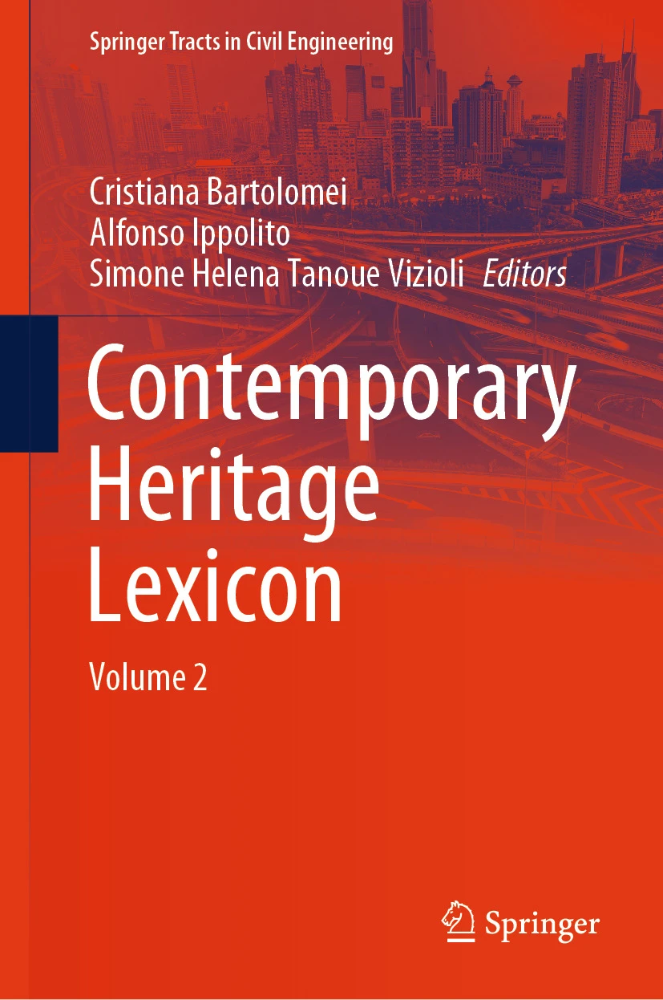
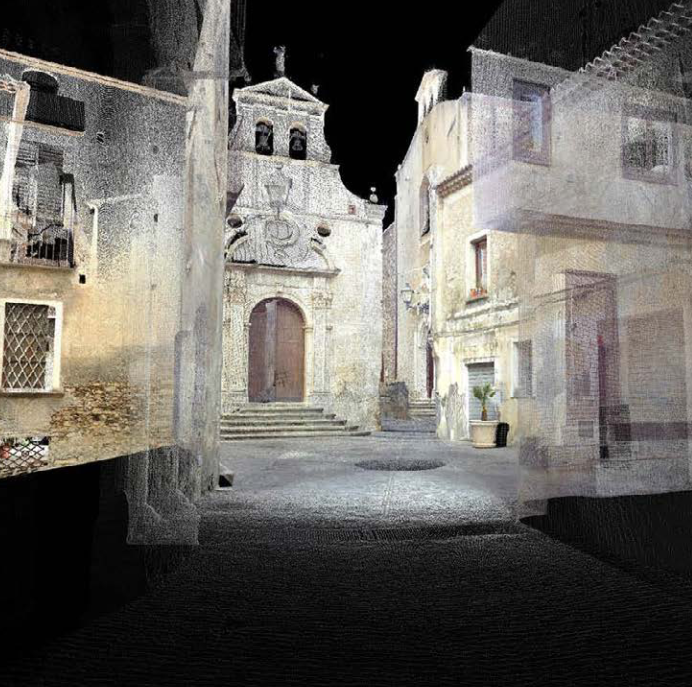
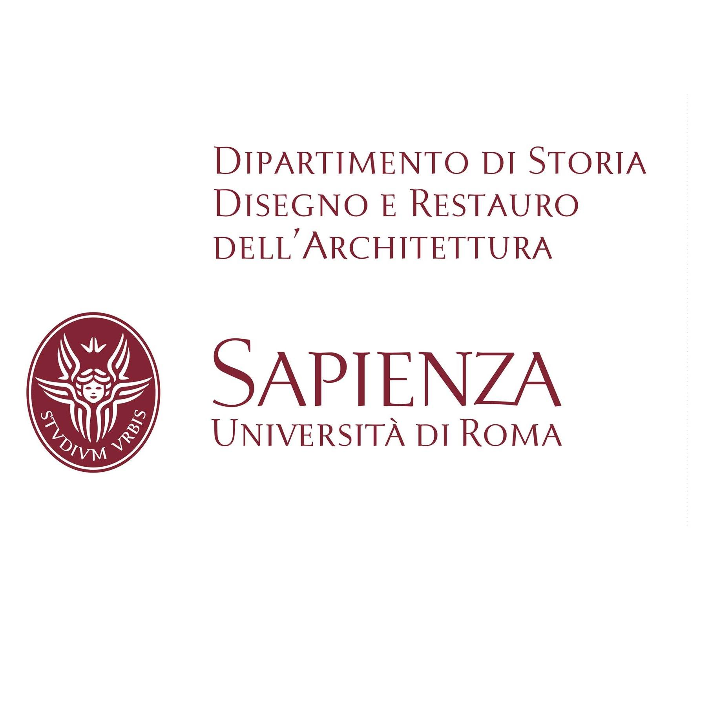
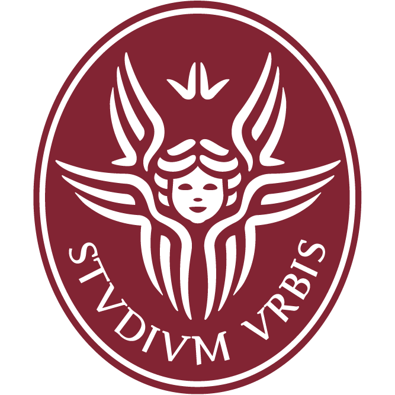
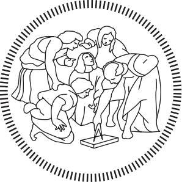

|
Francesco Stanziola I am a PhD student at Sapienza University of Rome, enrolled in the program of History, Representation, and Restoration of Architecture, within the Representation curriculum. email: francesco.stanziola [at] uniroma1.it |

Photo Credit: The very talented Giordano Maria Fortuna |
Research
My research focuses on the digitization and representation of architectural cultural heritage. I primarily work with laser scanning, photogrammetry, and I am exploring methods of neural rendering.
|
Publications |
|

|
Representing Cantàfora’s Visions of the City
Alfonso Ippolito, Davide Mezzino, Francesca Porfiri, Vittoria Castiglione, Rawan Darwa, Giordano Maria Fortuna, Giulia Luffarelli, Francesco Stanziola, Contemporary Heritage Lexicon, Vol. 2, 2024 Chapter The contribution examines the artistic work of Arduino Cantàfora from an architectural point of view. It focuses on the use of digital tools to virtualize his iconic painting Città Analoga. |
|

|
La bellezza che cura va tutelata. Fiumefreddo Bruzio e Salvatore Fiume
Alfonso Ippolito, Martina Attenni, Rawan Darwa, Nada Mokhtar Ahmed, Giordano Maria Fortuna, Francesco Stanziola, Misura / Dismisura | Measure / Out of Measure - UID, 2024 Chapter Extensive digitization and analisys of architectural heritage in a village of Southern Italy |
|
|
Graphic Design for Architectural Serious Games
Stefano Costantini, Giordano Maria Fortuna, Elisa Guarino, Alessia Mazzei, Arianna Moretti, Esterletizia Pompeo, Francesco Stanziola, International Symposium on Symbolic and Numeric Algorithms for Scientific Computing (SYNASC), 2024 Chapter This study highlights the role of architects in the gamification of cultural heritage, with a focus on Palazzo Barberini |
Events and presentations |
|
03 december 2024
|
online event with AJAC Associação Jauense de Ambiente e Cultura, presenting the KNOW.it PRIN project directed by prof. Alfonso Ippolito |
|
31 october - 03 november 2024
|
workshop of integrated architectural digitization in Centola (SA), directed by Alfonso Ippolito and Martina Attenni |
|
08-09 october 2024
|
presentation of XR in Serious Games. An Application on Palazzo Barberini at REAACH 2024 symposium, authors: S. Costantini, G. M. Fortuna, E. Guarino, A. Mazzei, A. Moretti, E. Pompeo, F. Stanziola |
|
18 september 2024
|
presentation of Graphic design for architectural serious games at SYNASC 2024, authors: S. Costantini (presenter), G. M. Fortuna, E. Guarino, A. Mazzei, A. Moretti, E. Pompeo, F. Stanziola |
|
12 september 2024
|
presentation of La bellezza che cura va tutelata: Fiumefreddo Bruzio e Salvatore Fiume at UID 2024, authors: A. IPPOLITO, M. ATTENNI ; N. M. AHMED, R. DARWA, G. M. FORTUNA, F. STANZIOLA |
|
17 november 2023
|
presentation of Open-Source and Low-Cost Digitization of Architectural Heritage: the case study of San Severino di Centola at The 3rd Italy-Korea Symposium on Disaster Prevention and Preservation of Cultural Heritage using Advanced ICT Technology, author: F. STANZIOLA |
Current position |
|

|
Sapienza University of Rome - Department of History, Representation and Restoration of Architecture
PhD student in the program of History, Representation and Restoration of Architecture Curriculum Representation (Disegno) My supervisors are Alfonso Ippolito and Martina Attenni Rome, Italy 2023 - ongoing (XXXIX Ciclo) |
Education |
|

|
Sapienza University of Rome
M.Arch in Architettura (Restauro) borgoaperto.it was developed as part of my master thesis, it is aimed to provide an open source and low cost digitization strategy for a small abandoned village in southern Italy, My supervisor was Alfonso Ippolito and my co-supervisor was Martina Attenni Rome, Italy 2023 |
|

|
Politecnico di Milano
B.Arch in Progettazione dell'Architettura Milan, Italy 2020 |
Other interests and hobbies |
|
I am passionate about electronic music, as a dj and producer/remixer... hopelessly nerding out over synthesizers and vinyl records. If you wish you can follow me on soundcloud.
I love scuba diving and often enjoy the stunning waters of Palinuro. I’m also very interested in undertaking a research project on underwater surveying. I'm enthusiastic about all things that fly (I'm also a drone pilot) and thanks to my amazing brother and his fantastic wife, I recently had the incredible opportunity to fly (and land :P ) a four-seat single-engine piper aircraft! |
|
{kind=link}